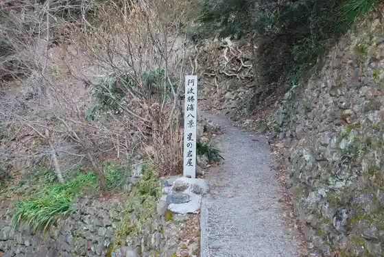
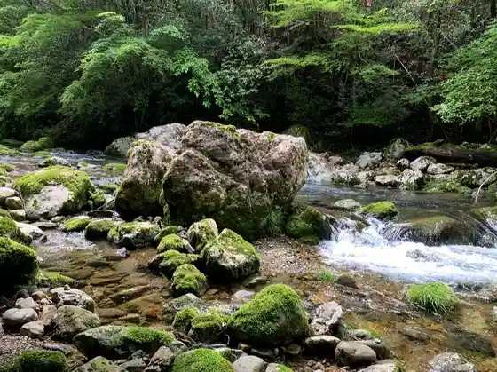
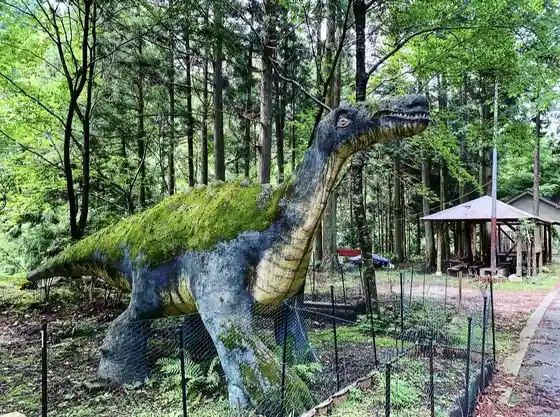
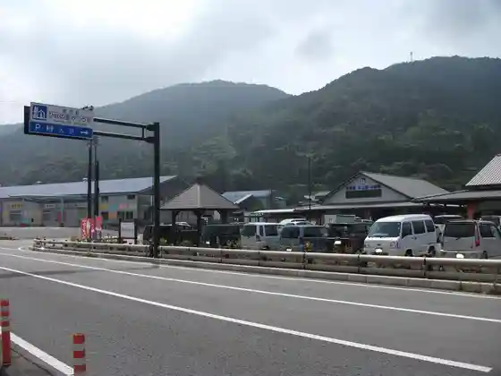

Kakurin Tera
Katsuura, Tokushima · 0885-42-3020 · Official / source link
Hoshitani Tera (Hoshi no Iwaya)
Katsuura, Tokushima · 0885-42-3805 · Official / source link

Tachikawa Gorge
Katsuura, Tokushima · Official / source link

Kyoryu Village
Katsuura, Tokushima · Official / source link

Roadside Station Hina no Sato Katsura
Katsuura, Tokushima · 0885-44-0112 · Official / source link

Katsuura Kawa, Hoshitani Sports Park
Katsuura, Tokushima · Official / source link
Kase Yama Ka Sei Yama
Katsuura, Tokushima · Official / source link
Sakamoto Hachiman Shrine
Katsuura, Tokushima · Official / source link
Tsubame Shokudo
Katsuura, Tokushima · Official / source link
Kaneko Ya
Katsuura, Tokushima · Official / source link
Ko no Mu
Katsuura, Tokushima · Official / source link
Mae Matsu Do
Katsuura, Tokushima · Official / source link
Takiguchi Shimizu Do
Katsuura, Tokushima · 0885-42-3170 · Official / source link
Kissa Orenji
Katsuura, Tokushima · Official / source link
Inaka Hisashi Shi Naka Yama
Katsuura, Tokushima · Official / source link
Uoyoshi
Katsuura, Tokushima · Official / source link
Mirika
Katsuura, Tokushima · Official / source link
Edo Soba Ichi Sao Fugetsu
Katsuura, Tokushima · Official / source link
Sakanatachi
Katsuura, Tokushima · Official / source link
Teuchi Chiudon Miyako Ie
Katsuura, Tokushima · Official / source link
O Tsuru
Katsuura, Tokushima · 09031838155 · Official / source link
Henro Yado Sora
Katsuura, Tokushima · Official / source link
Maekawa Campground
Katsuura, Tokushima · Official / source link
Ebisu Village (Ebisu no Sato)
Katsuura, Tokushima · 090-1002-4923 · Official / source link
Kakure Ie Yado Yoshitaro
Katsuura, Tokushima · 080-3167-2661 · Official / source link
Nama Ebisu Shrine
Katsuura, Tokushima · Official / source link
Taizo Tera
Katsuura, Tokushima · 090-5272-1038 · Official / source link
Hatake Mei Miso Koji Mise
Katsuura, Tokushima · 0885-42-2789 · Official / source link
Ikina Roman Kaido
Katsuura, Tokushima · Official / source link
Okubo Kajiya
Katsuura, Tokushima · 0885-42-2144 · Official / source link
Garden Taimu Ko no Mu
Katsuura, Tokushima · 0885-42-1003 · Official / source link
Kekihausu Mirika
Katsuura, Tokushima · 0885-42-3901 · Official / source link
Wagashi Tokoro Mae Matsu Do
Katsuura, Tokushima · 0885-42-3025 · Official / source link
Shina Soba Nomiguchi
Katsuura, Tokushima · 0885-42-2452 · Official / source link
Kashi Workshop Maeno
Katsuura, Tokushima · 0885-42-2044 · Official / source link
Awa Chi Bi Kaku Awa Jibie Aoki
Katsuura, Tokushima · 0885-42-3008 · Official / source link
Saki Raku (Sakura)
Katsuura, Tokushima · 090-4101-0571 · Official / source link
Katsuura Ryu Itariankafe Salotto (Sarotto)
Katsuura, Tokushima · Official / source link
Momiji Village
Katsuura, Tokushima · Official / source link
Aotokuru
Katsuura, Tokushima · Official / source link
Boruneo O Highlands (Baraokogen)
Katsuura, Tokushima · Official / source link
Hotoke Ishi
Katsuura, Tokushima · Official / source link
Imayama no no Village Butai
Katsuura, Tokushima · Official / source link
Katsuura Za, Shiki Samban So
Katsuura, Tokushima · Official / source link
Shiruria Ki Kurenai Sekkai Iwa
Katsuura, Tokushima · Official / source link
Yotte Ne City
Katsuura, Tokushima · Official / source link